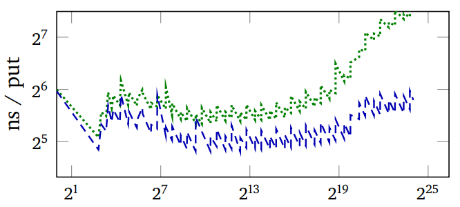

Adaptive Hashing
Tags: tech, lisp, Date: 2025-05-02
At the 2024 ELS, I gave a talk on adaptive hashing, which focusses on making general purpose hash tables faster and more robust at the same time.
Theory vs Practice
Hash table theory most concerns itself with the asymptotic worst-case cost with a hash function chosen randomly from a family of hash functions. Although these results are very relevant in practice,
those pesky constant factors, that the big-O cost ignores, do matter, and
we don't pick hash functions randomly but fix the hash function for the lifetime of the hash table.
There are Perfect Hashing algorithms, that choose an optimal hash function for a given set of keys. The drawback is that they either require the set of keys to be fixed or they are too slow to be used as general purpose hash tables.
Still, the idea that we can do better by adapting the hash function to the actual keys is key. Can we do that online, that is, while the hash table is being used? Potential performance gains come from improving the constant factors mentioned above by
having fewer collisions, and

being more cache-friendly.

The images above plot regret (the expected number of comparisons of
per lookup minus the minimum achievable) and the measured run-time
of PUT operations vs the number of keys in the hash table with a
particular key distribution. Green is Murmur (a robust hash
function), Blue is SBCL's expedient EQ hash. The
wiggling of the graphs is due to the resizing of the hash table as
keys are added to it.
Note how SBCL's regret starts out much lower and becomes much higher than that of Murmur, but if anything, it advantage grows.
Implementation
The general idea is sound, but turning it into real performance gains is hard due to the cost of choosing a hash function and switching to it. First, we have to make some assumption about the distribution of keys. In fact, default hash functions in language runtimes often make such assumptions to make the common cases faster, usually at the cost of weakened worst-case guarantees.
The rest of this post is about how SBCL's built-in hash tables, which had been reasonably fast, were modified. The core switching mechanism looks at
the length of the collision chain on PUT operations,
the collision count on rehash (when the hash table is grown), and
the size of the hash table.
Adapting EQ hash tables
Init to to constant hash function. This a fancy way of saying that we do linear search in a vector internally. This is an
EQhash table, so key comparison is as single assembly instruction.When the hash table is grown to more than 32 keys and it must be rehashed anyway, we switch to a hash function that does a single right shift with the number of bits to shift determined from the longest common run of low-bits in the keys.
If too many collisions, we switch to the previous default SBCL
EQ-hash function that has been tuned for a long time.If too many collisions, we switch to Murmur, a general purpose hash. We could also go all the way to cryptographic hashes.
In step 2, the hash function with the single shift fits the memory allocator's behaviour nicely: it is a perfect hash for keys forming arithmetic sequences, which is often approximately true for objects of the same type allocated in a loop.

In this figure, the red line is the adaptive hash.
Adapting EQUAL hash tables
For composite keys, running the hash function is the main cost. Adaptive hashing does the following.
For string keys, hash only the first and last 2 characters.
For list keys, only hash the first 4 elements.
If too many collisions, double the limit.

So, SBCL hash tables have been adaptive for almost a year now,
gaining some speed in common cases, and robustness in others.
The full paper is here.

PAX and DRef v0.4
Tags: tech, lisp, Date: 2025-04-23
Version 0.4 of PAX, the documentation system, and DRef, the definition reifier, was released. There were large refactorings, bug fixes, minor features, cosmetics, documentation and performance improvements too numerous to list. Here is a summary of the new features and notable changes.
DRef now supports
DTYPEs, which allow filteringDEFINITIONSandDREF-APROPOSresults according to the locative type hierarchy:(definitions 'print) ==> (#<DREF PRINT FUNCTION> --> #<DREF PRINT (UNKNOWN (:DEFOPTIMIZER PRINT SB-C:DERIVE-TYPE))> --> #<DREF PRINT (UNKNOWN --> (DECLAIM PRINT --> SB-C:DEFKNOWN))>)(definitions 'print :dtype '(and t (not unknown))) ==> (#<DREF PRINT FUNCTION>)The
AND Tbit restricts the query to definitions in the running Lisp. The top of theDTYPEhierarchy isDREF:TOP, which includes external definitions such as theCLHS, that comes with PAX:(definitions 'print :dtype '(not unknown)) ==> (#<DREF PRINT (CLHS FUNCTION)> #<DREF PRINT FUNCTION>)(dref-apropos "method" :package :dref :external-only t :dtype 'class) ==> (#<DREF METHOD CLASS> #<DREF METHOD-COMBINATION CLASS>)The locative type hierarchy can be queried programmatically, and this information is included in their documentation (see for example the
GENERIC-FUNCTIONlocative type).The PAX Live Home Page better supports exploration without having to leave the browser.
It lists packages grouped by ASDF systems that define them (when this can be determined from the source locations).
It links to apropos pages for each locative type.
It has an input box for looking up documentation right from the browser (as if with
mgl-pax-documentfrom Emacs).It has an input box for looking up apropos right from the browser (as if with
mgl-pax-aproposfrom Emacs).The web server can be started without Emacs.
Completion of names and locatives in Emacs is much improved.
New aliases were added to the
CLHSpages documenting format directives (e.g.~F), standard macro characters (#A) and loop keywords (sum,:sum,loop:sum), so that one can justC-.(mgl-pax-document) them. See the documentation of theCLHSlocative.The DRef extension api has been cleaned up.
On Multifaceted Development and the Role of Documentation
Tags: tech, lisp, pompousness, Date: 2023-08-17
Catchy title, innit? I came up with it while trying to name the development style PAX enables. The original idea was something vaguely self-explanatory in a straight out of a marketing department kind of way, with tendrils right into your unconscious. Documentation-driven development sounded just the thing, but it's already taken. Luckily, I came to realize that neither documentation nor any other single thing should drive development. Less luckily for the philosophically disinclined, this epiphany unleashed my inner Richard P. Gabriel. I reckon if there is a point to what follows, it's abstract enough to make it hard to tell.
... read the rest of On Multifaceted Development and the Role of Documentation.
Try in Emacs
Tags: tech, lisp, Date: 2023-08-14
Try, my test anti-framework, has just got light Emacs integration. Consider the following test:
(deftest test-foo ()
(is (equal "xxx" 5))
(is (equal 7 7))
(with-failure-expected (t)
(is (same-set-p '(1) '(2)))))The test can be run from Lisp with (test-foo) (interactive
debugging) or (try 'test-foo) (non-interactive), but now there is
a third option: run it from Emacs and get a couple of conveniences
in return. In particular, with M-x mgl-try then entering
test-foo, a new buffer pops up with the test output, which is
font-locked based on the type of the outcome. The buffer also has
outline minor mode, which matches the hierarchical structure of the
output.
 The buffer's major mode is
Lisp, so
The buffer's major mode is
Lisp, so M-. and all the usual key bindings work. In additition,
a couple of keys bound to navigation commands are available. See the
documentation
for the details. Note that Quicklisp has an older version of Try
that does not have Emacs integration, so you'll need to use
https://github.com/melisgl/try
until the next Quicklisp release.
DRef and PAX v0.3
Tags: tech, lisp, Date: 2023-07-26
DEFSECTION needs to refer to definitions that do not create a
first-class object (e.g. stuff like (*DOCUMENT-LINK-TO-HYPERSPEC*
VARIABLE)), and since its original release in 2014, a substantial
part of
PAX dealt
with locatives and references, which reify definitions. This release
finally factors that code out into a library called
DRef,
allowing PAX to focus on documentation. Being very young, DRef lives
under adult supervision, in a
subdirectory
of the PAX repository.
... read the rest of DRef and PAX v0.3.
PAX Live Documentation Browser
Tags: tech, lisp, Date: 2023-06-10
PAX got a live documentation browser to make documentation generation a more interactive experience. A great thing about Lisp development is changing a single function and quickly seeing how it behaves without the delay of a full recompile. Previously, editing a docstring required regenerating the full documentation to see how the changes turned out. The live documentation browser does away with this step, which tightens the edit/document loop.
PAX also got an apropos browser. It could always generate documentation for stuff not written with PAX in mind, so with the live browser already implemented, this was a just a small add-on.
The trouble with interactivity is, of course, that it's difficult to get the point across in text, so I made two short videos that demonstrate the basics.
Grid Typesetting
Tags: tech, Date: 2023-04-17
I put the sources of the Two-Tailed Averaging paper on github. Of course, the sources are also available on arxiv, but this may give better visibility to the LaTeX grid typesetting code in there. Also, note how much cleaner the paper looks with the XCharter font compared to Times New Roman. No wonder Matthew Butterick pushes Charter. By the way, see what he has to say about grids and baseline grids, in particular.
Normalize Fonts for Comparison
Tags: tech, Date: 2023-04-10
In short, comparing fonts at the same font size is almost never the right thing to do. Compare them at the same x-height or, better yet, at the same space usage.
... read the rest of Normalize Fonts for Comparison.
PAX v0.1
Tags: tech, lisp, Date: 2022-02-16
PAX v0.1 is released. At this point, I consider it fairly complete. Here is the changelog for the last year or so.
New Features
To reduce deployment size, made the MGL-PAX system autoload navigation, documentation generation, and transcription code.
Symbols in the CL package are linked to the hyperspec like this:
PRINT, which renders asPRINT.Hyperspec sections and issues can be linked to with the
CLHSlocative like this:[lambda lists][CLHS], which renders as lambda lists.Added support for
[see this][foo function]and[see this][foo]style of linking.Added
DECLARATIONlocative.
... read the rest of PAX v0.1.
Migration to Github
Tags: tech, Date: 2014-09-25
Due to the bash security hole that keeps giving, I had to disable gitweb at http://quotenil.com/git/ and move all non-obsolete code over to github. This affects:
Hung Connections
Tags: tech, Date: 2011-02-27
My ISP replaced a Thomson modem with a Cisco EPC3925 modem-router to fix the speed issue I was having. The good news is that the connection operates near its advertised bandwidth, the bad news is that tcp connections started to hang. It didn't take long to find out that this particular router drops "unused" tcp connections after five minutes.
... read the rest of Hung Connections.
OfflineIMAP with Encrypted Authinfo
Tags: tech, Date: 2011-02-26
I've moved to an OfflineIMAP +
Gnus setup that's outlined at
various
places.
Gnus can be configured to use
~/.authinfo as a
netrc style of file to read passwords from and can easily use
encrypted
authinfo
files as well. Offlineimap, on the other hand, offers no such
support, and passwords to the local and remote imap accounts are
normally stored in clear text in .offlineimaprc.
... read the rest of OfflineIMAP with Encrypted Authinfo.
Upgrade Woes 2
Tags: tech, Date: 2010-02-08
Debian Squeeze finally got Xorg 7.5 instead of the old and dusty 7.4. The upgrade was as smooth as ever: DPI is off, keyboard repeat for the Caps Lock key does not survive suspend/resume and the trackpoint stopped working. Synaptics click by tapping went away before the upgrade so that doesn't count.
Upgrade Woes
Tags: tech, Date: 2009-11-06
Debian Lenny was released back in February. My conservativeness only lasts about half a year, so I decided to upgrade to Squeeze aka Debian testing. The upgrade itself went rather smoothly with a few notable exceptions. With KDE 4.3, I should have waited more.
... read the rest of Upgrade Woes.
Space Cadet
Tags: lisp, tech, Date: 2008-12-15
Emacs users often report problems caused by strain on the pinky finger, which is used to press the Control key. The standard answer to that is to map Caps Lock to Control. I believe that there is a better way:
... read the rest of Space Cadet.
Backup
Tags: tech, Date: 2008-03-28
My carefully updated list of files to back up had grown so long that it made me worry about losing something important.
... read the rest of Backup.
First Post
Tags: personal, tech, Date: 2008-02-01
2020-05-05 – This blog was moved to PAX.
After a long time of waiting to write my own blog software like true hackers with infinite time do (and those irritated by Wordpress), I bit the bullet and installed blorg, a very low-overhead Emacs blog engine on top of org-mode, that I happen to use as an organizer. Blorg basically converts an org mode buffer to HTML files, so it is completely static: send me email if you have comments, I have no desire to maintain a more complex solution with comment filtering.
... read the rest of First Post.